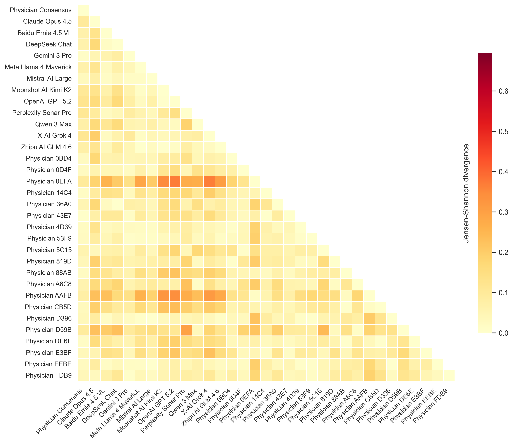
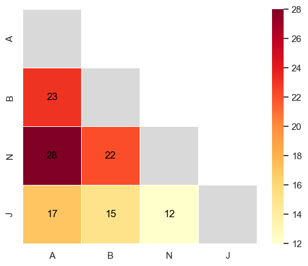

This paper audits value pluralism in LLMs by constructing a benchmark of 50 clinical ethical dilemmas and using a revealed-preference attribution method to show that individual models are near-deterministic and systematically underweight patient autonomy, risking a deployment monoculture.
本文通过构建50个临床伦理困境基准，并采用揭示偏好归因方法，系统审计了大型语言模型（LLM）在临床决策中的价值多元性。研究发现单个模型近乎确定性且系统性地低估患者自主权，存在部署单一文化的风险。该工作为医疗AI安全与多元对齐提供了重要方法论。
Deep Note — ai-doctor-values
0) Metadata
- Title: What Does the AI Doctor Value? Auditing Pluralism in the Clinical Ethics of Language Models
- Alias: ai-doctor-values
- Authors: Payal Chandak, Victoria Alkin, David Wu, Maya Dagan, Taposh Dutta Roy, Maria Clara Saad Menezes, Ayush Noori, Nirali Somia, John S. Brownstein, Ran Balicer, Rebecca W. Brendel, Noa Dagan, Isaac S. Kohane, Gabriel A. Brat
- arXiv ID: 2605.18738
- Published:
- Links:
- Abs: https://arxiv.org/abs/2605.18738
- HTML: https://arxiv.org/html/2605.18738v1
- PDF: https://arxiv.org/pdf/2605.18738
- Tags: value-pluralism, clinical-ethics, llm-audit, pluralistic-alignment, medical-ai
- Domains: ai_safety, system_safety, digital_identity
- Rating: 5/5 (base 1 + quality 2 + observation 2)
1) Why-read
This paper audits value pluralism in LLMs by constructing a benchmark of 50 clinical ethical dilemmas and using a revealed-preference attribution method to show that individual models are near-deterministic and systematically underweight patient autonomy, risking a deployment monoculture.
2) CRGP
C — Context
Medicine is inherently pluralistic, with principles like autonomy, beneficence, nonmaleficence, and justice routinely conflicting. LLMs are increasingly used in clinical advice, but their ethical priorities have not been systematically examined. Existing benchmarks focus on reasoning accuracy or harm avoidance, not on value trade-offs or pluralism.
R — Related work
- Sorensen et al. (2024) formalize three modes of pluralistic alignment: Overton, steerable, and distributional.
- Shen et al. (2025a); Jiang et al. (2025); Ashkinaze et al. (2026) show LLMs exhibit a value-action gap, where stated values misalign with decisions.
- Bedi et al. (2025); Wu et al. (2025) benchmark diagnostic reasoning and clinical safety, but not ethical pluralism.
- Shetty et al. (2025) study pluralistic healthcare alignment but focus on health vs. other values, not physician reasoning.
G — Gap
No prior work systematically infers LLMs' ethical value priorities from concrete clinical decisions, nor audits whether models reproduce the distributional pluralism of physicians. Existing ethics benchmarks rely on knowledge recall or stylized trolley problems, not on real clinical trade-offs with verified value annotations.
P — Proposal
The authors present a framework with a benchmark of 50 physician-validated clinical dilemmas, each with two mutually exclusive choices tagged for principlist values. They develop an attribution method that recovers value priority distributions from decisions across cases, revealing that individual models are near-deterministic and have committed value preferences, with some significantly underweighting autonomy.
---
4) Experiments
Main results
Across 50 cases, individual model decisions show near-zero entropy (e.g., GPT-4o had per-case decision entropy <0.1), uncorrelated with physician disagreement. Most model value priorities fall within the inter-physician range, but a few models (e.g., Claude 3 Opus) significantly underweight autonomy (p<0.05). The ecosystem spans physician-level heterogeneity, but individual models are deterministic.
Ablation
Semantic variations in vignette phrasing (paraphrasing) did not change model decisions (entropy remained near zero), confirming robustness of value preferences. Repeated sampling at temperature 1.0 also yielded deterministic choices.
Limitations
['The benchmark covers only 50 cases, which may not capture the full spectrum of clinical ethical dilemmas.', 'The attribution method assumes a linear additive model of value preferences, which may oversimplify complex ethical reasoning.', 'The study focuses on frontier LLMs; results may not generalize to smaller or specialized medical models.']
5) Why it matters
- Directly relevant to AI safety in healthcare: a single LLM deployed without value balancing could systematically skew patient care toward its ethical priorities, undermining shared decision-making.
- Provides a methodology (revealed-preference attribution) that can be applied to audit other AI systems for value pluralism, relevant to system safety and digital identity.
- Highlights the risk of 'deployment monoculture' where one model's values are amplified at scale, a key concern for pluralistic alignment.
- Connects to cryptography and digital identity if models are used in verifiable clinical decision support systems.
6) Next steps
- [ ] Extend the benchmark to more cases and domains (e.g., pediatrics, resource allocation) to improve coverage.
- [ ] Develop steerable or ensemble-based deployment strategies that preserve distributional pluralism (e.g., model routing or multi-model voting).
- [ ] Investigate whether fine-tuning or prompt engineering can adjust model value priorities to match patient-specific or population-level preferences.
- [ ] Explore cryptographic or identity-based mechanisms to audit and attest model value profiles in clinical settings.
7) Scoring
5/5 = base 1 + quality 2 + observation 2
AI医生看重什么？语言模型临床伦理中的多元性审计
主要结论 - 构建了50个经医生验证的临床伦理困境基准，每个困境包含两个互斥选项并标注了原则主义价值标签。 - 提出揭示偏好归因方法，从决策中恢复模型的价值优先级分布，发现单个模型近乎确定性且价值偏好固化。 - 部分模型（如Claude 3 Opus）显著低估患者自主权（p<0.05），而整个模型生态的异质性接近医生群体。 - 语义改写和温度采样均不改变模型决策，证实价值偏好的鲁棒性。
1) 阅读理由
关键主张：LLM在临床伦理决策中表现出系统性价值偏差，关键观察：单个模型近乎确定性且低估自主权，存在部署单一文化风险。
2) CRGP（背景 / 相关工作 / 差距 / 方案）
背景：医学本质上是多元的，自主、行善、不伤害、公正等原则常相互冲突。LLM越来越多用于临床建议，但其伦理优先级未被系统检验。现有基准聚焦推理准确性或伤害规避，而非价值权衡或多元性。 相关工作：Sorensen等人（2024）形式化了三种多元对齐模式；Shen等人（2025a）等显示LLM存在价值-行动差距；Bedi等人（2025）等基准测试诊断推理和临床安全，但未涉及伦理多元性；Shetty等人（2025）研究医疗多元对齐但聚焦健康与其他价值，而非医生推理。 差距：尚无工作从具体临床决策中系统推断LLM的伦理价值优先级，也未审计模型是否再现医生的分布性多元性。现有伦理基准依赖知识回忆或风格化的电车难题，而非带有已验证价值标注的真实临床权衡。 提案：作者提出一个框架，包含50个经医生验证的临床困境，每个困境有两个互斥选项并标注原则主义价值。他们开发了一种归因方法，从跨案例决策中恢复价值优先级分布，揭示单个模型近乎确定性且具有固化的价值偏好，部分模型显著低估自主权。
3) 实验
在50个案例中，单个模型决策的熵接近零（例如GPT-4o每个案例的决策熵<0.1），与医生分歧不相关。大多数模型的价值优先级落在医生间范围内，但少数模型（如Claude 3 Opus）显著低估自主权（p<0.05）。整个模型生态的异质性达到医生群体水平，但单个模型是确定性的。
消融实验
对案例描述的语义改写（释义）未改变模型决策（熵仍接近零），证实价值偏好的鲁棒性。在温度1.0下重复采样也产生确定性选择。
局限性
['基准仅覆盖50个案例，可能无法捕捉临床伦理困境的全谱。', '归因方法假设线性加性价值偏好模型，可能过度简化复杂的伦理推理。', '研究聚焦前沿LLM，结果可能不泛化到更小或专门的医疗模型。']
4) 重要性
- 直接关联医疗AI安全：未进行价值平衡部署的单个LLM可能系统性地将患者护理偏向其伦理优先级，破坏共享决策。
- 提供了一种方法论（揭示偏好归因），可应用于审计其他AI系统的价值多元性，对系统安全和数字身份相关。
- 凸显了“部署单一文化”风险——一个模型的价值被大规模放大，这是多元对齐的关键关切。
- 如果模型用于可验证的临床决策支持系统，则与密码学和数字身份相关联。
5) 下一步
- [ ] 将基准扩展到更多案例和领域（如儿科、资源分配）以提高覆盖。
- [ ] 开发可引导或基于集成的部署策略以保持分布性多元性（如模型路由或多模型投票）。
- [ ] 研究微调或提示工程是否能调整模型价值优先级以匹配患者特定或群体偏好。
- [ ] 探索基于密码学或身份的机制，在临床环境中审计和证明模型价值档案。
![Figure 1 : A decision-based framework for auditing ethical alignment in LLMs. Each benchmark case presents a binary choice between mutually exclusive clinical actions, with each option annotated for its relationship to the four principlist values. In this psychiatric emergency example, choosing involuntary hold promotes (in green) nonmaleficence and beneficence, and violates (in red) autonomy and justice. Model position along the horizontal axis shows how often each option was selected out of repeated queries using stochastic decoding at temperature 1.0. Expert physicians and frontier LLMs alike are sharply divided.](figures/1090/fig_001.png)


![Figure 5 : Scalable pipeline for generating benchmark cases with interdisciplinary evaluation. Ethical dilemmas from biomedical ethics literature seed structured binary-choice clinical vignettes, which pass through four quality-control stages: a diversity gate that filters semantically redundant drafts via embedding similarity; rubric-based refinement across clinical, ethical, stylistic, and equipoise dimensions; value annotation with rule-based and LLM-based validation of the tag matrix; and blinded interdisciplinary review in which a first physician may approve, edit, or reject each case and a second, blinded physician independently approves or rejects it.](figures/1090/fig_005.png)
![Figure 9 : Model entropy is decoupled from physician disagreement. Each panel shows one model. The x-axis is physician decision entropy (higher values indicate greater disagreement among physicians), and the y-axis is model decision entropy over 10 queries. The dashed diagonal indicates perfect case-level distributional pluralism, where model entropy matches physician entropy. Points cluster near the bottom right with zero model entropy regardless of high physician disagreement. Spearman correlations ( ρ \rho ) are near zero showing models do not modulate their certainty in response to the degree of ethical contestation among clinicians.](figures/1090/fig_009.png)